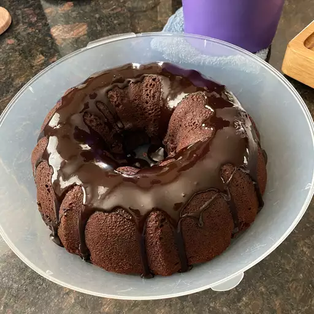

Fudge Cake Recipe

Fudge Cake
A small fudge cake is a rich and indulgent dessert that packs an intense
chocolate flavor into a compact size. This moist and decadent cake is
typically made with high-quality cocoa powder, melted chocolate, butter,
sugar, eggs, and flour. The result is a dense and fudgy texture that melts
in your mouth. Often, small fudge cakes are baked in individual portions,
making them perfect for single servings or sharing. They are commonly
enjoyed warm, with a gooey center, and may be topped with a dusting of
powdered sugar, a scoop of vanilla ice cream, or a drizzle of chocolate
ganache for an extra touch of sweetness. Small fudge cakes are a
delightful treat for chocolate lovers and are often served on special
occasions or as a comforting dessert to satisfy sweet cravings.
Ingredients
- 1 ½ cups milk
- 1 (3.5 ounce) package non-instant chocolate pudding mix
- 1 cup semisweet chocolate chips
- 1 ⅓ cups white sugar
- ¾ cup butter, softened
- ½ cup shortening
-
Preheat the oven to 350 degrees F (175 degrees C). Grease and flour a
10-inch Bundt or tube pan.
-
Make the cake batter: In a large bowl, combine white sugar, butter, and
shortening. Beat until light and fluffy. Add vanilla and eggs. Mix well.
-
Add flour, 1/2 cup cocoa, baking powder, salt, and 1 cup milk to a bowl.
Beat on low speed until moistened. Beat on medium speed for 3 minutes,
then stir in walnuts.
-
Reserve 2 cups of the batter. Pour remaining batter into the prepared
pan. Spoon the filling in a ring on top of the batter, making sure it
does not touch the sides of the pan. Spoon reserved batter over the
filling.